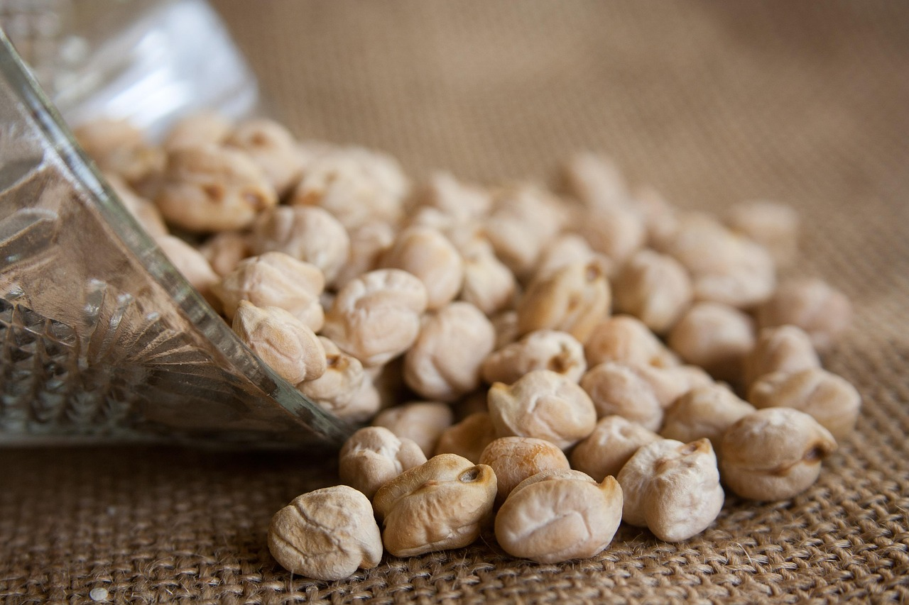
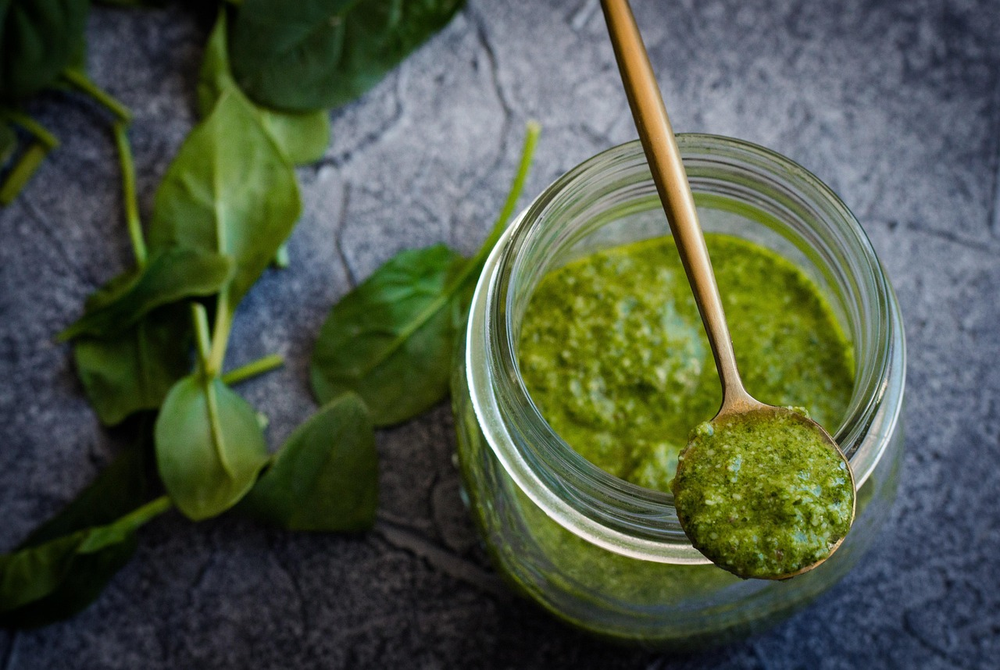

HOME
Pesto Chickpea Recipe
The following recipe is another staple of my weekly/biweekly meal plan. It's very healthy, very quick to make & easily adaptable.
 
Ingredient
- 1 can chickpea
- 2 to 3 tbsp pest
- 1 medium onion
- 1 medium green pepper
- 2 cups of fresh spinach
Directions
- drain and wash chickpeas, dice all veggies
- sautee veggies 5 to 10 mins
- add chickpeas
- add spices to taste
- add diced spinach and allow to wilt
- take off of heat, and add pesto and stir in
For more recipes, try out Artichoke dip or the Tofu Scramble